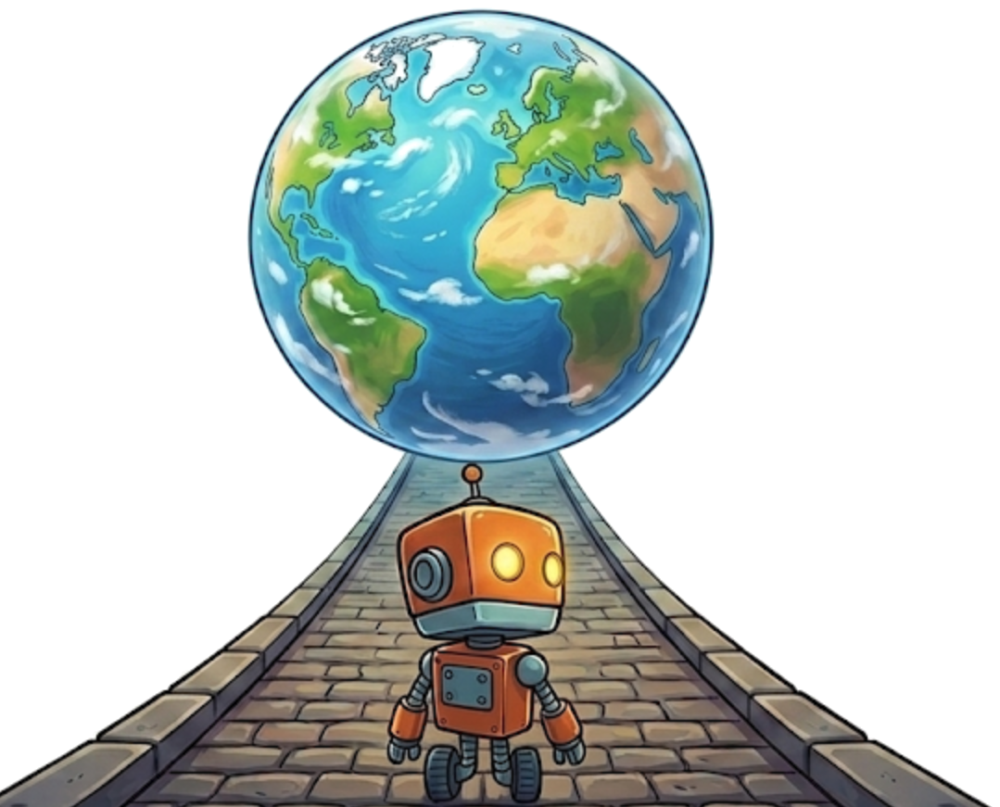
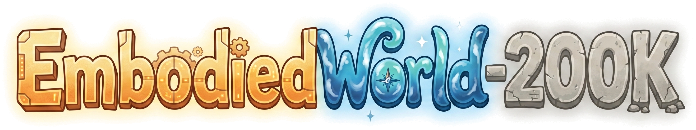

Project Page · EmbodiedWorld-200K Dataset & EWA Training Recipe
Hover a card to preview · click to enlarge · press G for grid view.


Building embodied agents that can perceive, reason, and act across diverse 3D worlds is a central research direction toward artificial general intelligence. Yet most existing work on embodied agents remains confined to specific tasks in a single scene and transfers poorly to new environments, leaving general embodied agents for open-world settings an important but under-explored direction. We refer to such agents as Embodied World Agents (EWAs), whose defining property is the ability to understand diverse visual environments and execute general actions in open-world conditions.
To advance research on EWAs, we first release EmbodiedWorld-Bench, a large-scale dataset of about 260K samples for open-world embodied planning that spans diverse scenes. Each example is equipped with multi-level annotations, ranging from low-level camera-motion trajectories to high-level semantic instructions, and is accompanied by unified evaluation splits and task-specific metrics, providing a shared substrate for offline pretraining and fair evaluation of EWAs.
Beyond offline supervision, a defining characteristic of an EWA is its interaction with the environment; training solely on offline data is therefore insufficient, especially for generalizing to scenes not covered in the training distribution. Building dedicated real interactive environments, however, is often prohibitively expensive. To address this, we propose a novel training scheme that employs a video world model as a low-cost environment proxy and performs interactive reinforcement-learning (RL) post-training of the EWA within it.
Empirically, pretraining on EmbodiedWorld-Bench substantially improves the open-world embodied planning ability of the EWA, and further RL post-training inside a world model yields clear gains on out-of-distribution scenes. We will release the full dataset, baseline checkpoints, and the accompanying training and evaluation code to support future research on EWAs.